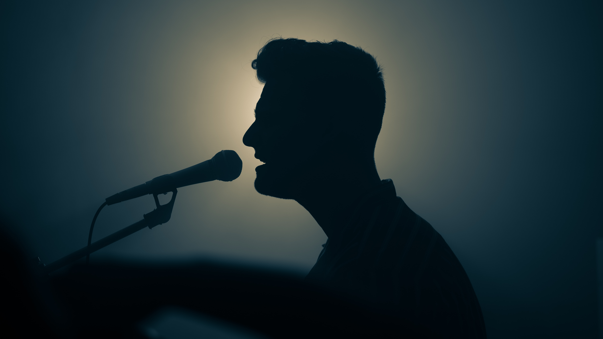
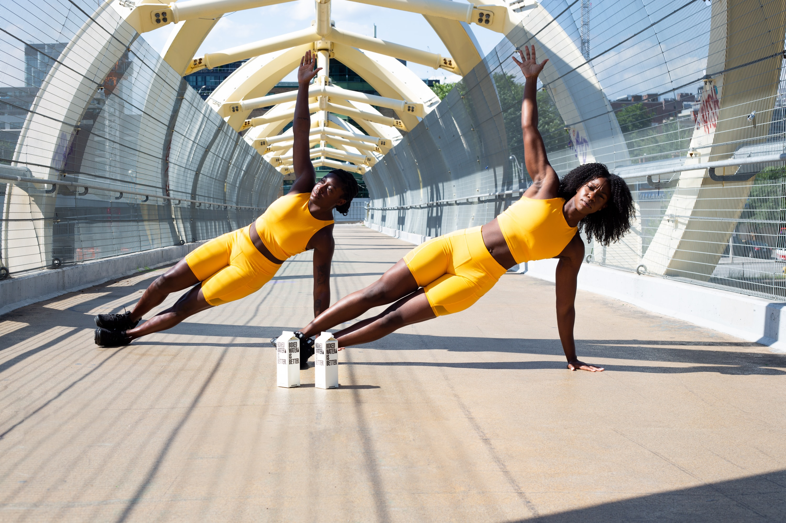

Escuchar Música

Por una parte me gusta muchísimo la música, casi como a cualquier persona que exista en este plano de la existencia. La verdad es que mis gustos son muy abiertos, pueden gustarme canciones de Música Clásica, Electrónica, Pop, Heavy Metal, Rock and Roll, Boleros, Regional Mexicano, Country, Kpop, Géneros Alternativos de todo prácticamente, solo que me gustan por lo general las canciones que tiene un ritmo muy detonante para mí, hay canciones que a veces no las entiendo en cuanto a su letra, composición y música. A eso me refiero a que me gustan las canciones como más pegajosas y la mayoría de veces son las más populares de cada artista o agrupación.
Comer y Cocinar

También me gusta mucho la comida. Me gusta tanto comer, como preparar diferentes platillos. Me fascina ir conociendo nuevos sabores y lo que más me gustaría es iniciar a viajar por el mundo para conocer los sabores típicos de cada región en el mundo. Cuando cocinó me gusta crear algo especial y por lo general lo que más me gusta hacer es la repostería. Entre mis platillos preferidos están:
- Mole Poblano
- Enchiladas Rojas
- Ramen de Res Teriyaki
- Pizza de Peperoni
- Cualquier tipo de Spaguetti
- Lasaña
Cantar

No hay nada más en este mundo que me relaje tanto como lo es cantar. Ciertamente necesito sentirme inspirado, puesto que hay momentos que el estrés puede ser demasiado que llega a afectar tanto mi estado de ánimo y no me deja disfrutar del cantar. Lo que más me gusta cantar son canciones en otros idiomas, ya que por una parte cuando escucho la pista original ayuda a mi comprensión auditiva y el cantar me ha ayudado mucho a mejorar mi pronunciación tanto en el inglés como en el coreano.
Hacer Ejercicio

Otra de las actividades que me ayudan a relajarme, es el hacer ejercicio. Normalmente me gusta hacerlo por la noche antes de dormir, ya que eso me ayuda a gastar mis últimas reservas de energía y así dormir más rápido y profundamente. También he notado que el ejercicio es una actividad que me ayuda a eliminar el estrés y ansiedad. Creo que más que usar el ejercicio para lograr un cuerpo atlético o atractivo, todos deberíamos hacerlo para el bien propio.